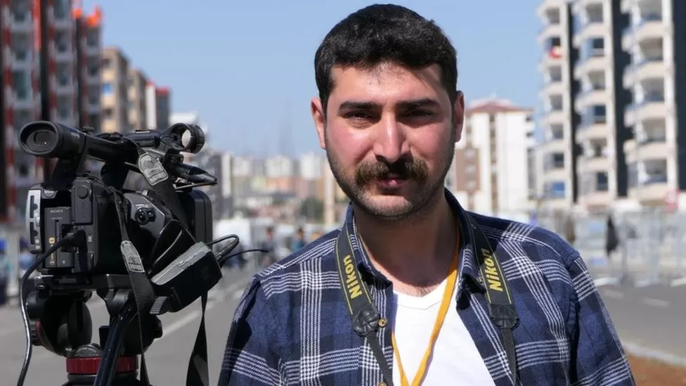
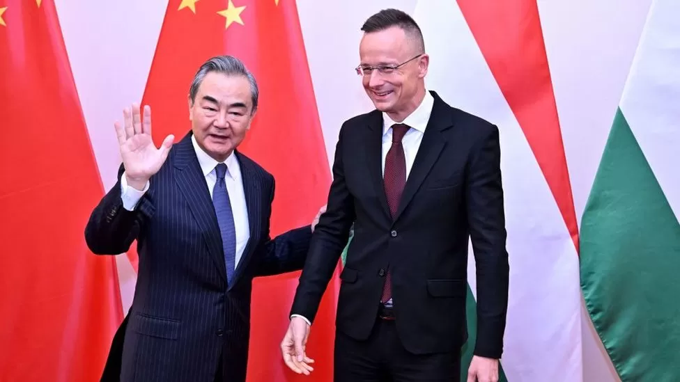
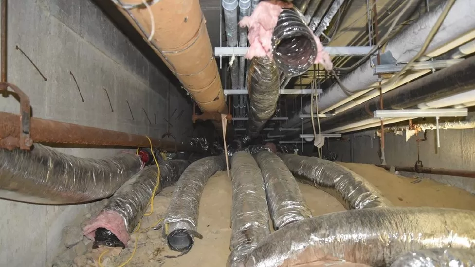

Freelance journalist Mir Ali Koçer was 200 miles from the epicentre when Turkey was struck by a deadly earthquake on 6 February. Grabbing his camera and microphone, he drove down to the affected region to interview survivors
Over the past year, leaders in the West have tried to cajole China to help them end the Ukraine war. Now Beijing has given its firmest response yet - and it's not something many in the West would like.
A town official was running an illegal cryptocurrency mining operation from a crawl space under a school in the US state of Massachusetts, police say.
